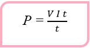
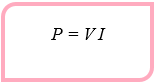

Daya Listrik
Pada saat kamu menggunakan lampu duduk ketika belajar, berapakah energi listrik yang kamu gunakan? Berapakah energi listrik yang digunakan setiap waktunya? Orang tuamu setiap awal bulan harus membayar rekening listrik. Sebenarnya besaran apakah yang dibayar oleh orang tuamu? Energi listrik yang bekerja pada suatu penghantar per satuan waktu disebut daya listrik. Energi listrik menyebabkan lampu pijar menyala dan setrika listrik panas. Energi listrik mem beri kan daya listrik untuk menyalakan televisi, kulkas, komputer, dan peralatan listrik lainnya.
Kamu telah mempelajari hubungan antara usaha dan energi yang menyatakan bahwa energi adalah kemampuan untuk melakukan usaha. Daya listrik dapat diartikan sebagai usaha yang dilakukan setiap sekon. Secara matematis, daya listrik dituliskan sebagai berikut
Dengan keterangan :
P= daya listrik (watt)
W = energi listrik (joule)
t = selang waktu
Dari persamaan-persamaan sebelumnya diketahui bahwa W = V I t maka

Satuan daya listrik adalah joule/sekon atau watt (W).
1 joule/sekon = 1 volt.ampere = 1 watt
1 kW = 1.000 watt
1 MW = 1.000.000 watt
Dari Persamaan P = V I dapat diketahui bahwa daya listrik merupakan perkalian antara beda potensial dan kuat arus listrik. Oleh sebab itu, pada setiap alat listrik selalu dicantum- kan besarnya daya dan tegangan yang diperkenankan pada alat tersebut.
Sebuah lampu pijar yang bertuliskan 220 volt, 100 watt jika dipasang pada tegangan 220 volt, akan mengalirkan energi listrik sebesar 100 joule setiap sekon. Akan tetapi, jika lampu tersebut dipasang pada tegangan di bawah 220 volt, energinya akan kurang dari 100 watt. Akibatnya, kerja lampu pijar tersebut tidak maksimal.
Sebuah alat listrik dipasang pada tegangan 220 volt dan menggunakan arus listrik sebesar 1 ampere. Hitunglah :
a. daya listriknya, dan
b. energi yang digunakan dalam waktu 5 menit.
Penyelesaian:
Diketahui:
V = 220 volt
I = 1 A
t = 5 menit = 5 × 60 sekon = 300 sekon
Ditanyakan:
a. Daya listrik (P)
b. Energi yang digunakan (W)
Jawab:
a. P = V I
P = 220 volt × 1 A
P = 220 watt
Jadi, daya listrik yang digunakan sebesar 220 watt.
b. W = P × t
W = 220 watt × 300 sekon
W = 66.000 joule
Jadi, energi yang digunakan selama 5 menit adalah 66.000 joule.
Lampu pijar berdaya 25 watt, dihubungkan dengan sumber tegangan. Ternyata, arus yang mengalir 0,2 A. Hitung potensial
sumber tegangan itu.
Penyelesaian:
Diketahui:
watt
ampere
Ditanyakan: V = ?
Jawab:
V = P/I
volt
Sebuah peralatan listrik rumah tangga tertulis 220 V/300 W dipakai selama 5 menit, maka hitunglah besar kuat arus yang mengalir.
Penyelesaian :
Diketahui:
volt
watt
sekon
Ditanya : I = ?
Jawab :
ampere